QUICK MENU
통증의 원인부터 찾는 서울더원마취통증의학과의원의 비수술 통증 치료
서울더원마취통증의학과의원은 단순한 증상 완화가 아니라 통증의 근본 원인을 정밀하게 진단합니다. 환자 한 분 한 분의 상태에 맞춰 비수술 중재적 치료를 설계하여, 몸에 부담이 적으면서도 효과적인 회복을 돕겠습니다.
초음파(Sono) 유도 하에 근육·힘줄·인대·신경을 정확히 확인하고 주사치료를 시행합니다.
Sono Intervention 치료의 약자입니다.
UltraSonography 장비의 약자로, 초음파검사 장비를 뜻합니다. X-ray로 검사하기 어려운 근육, 힘줄, 인대, 신경, 염증 등을 정확하게 검사할 수 있어 정확한 주사치료를 도와줍니다.

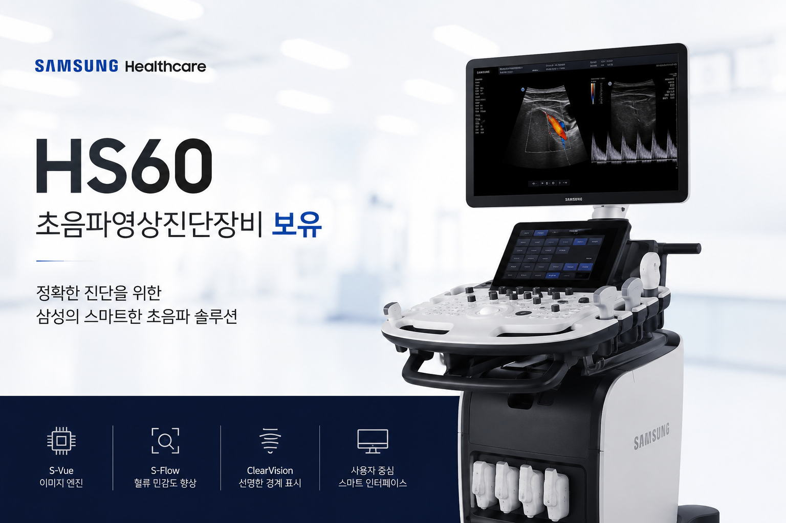
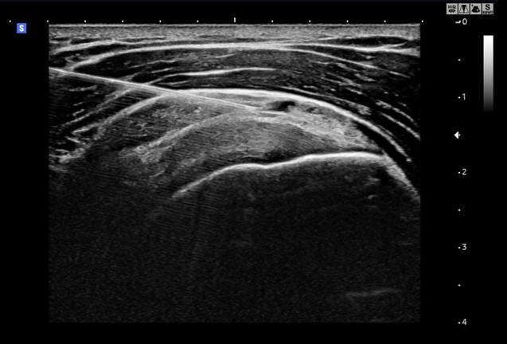
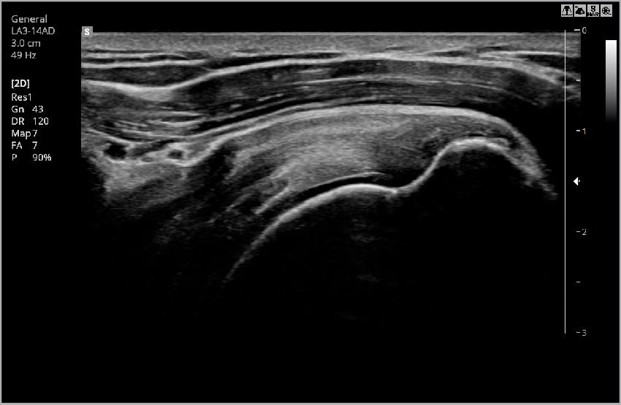
C-arm 영상 유도 하에 목·허리·관절 부위에 정확한 주사치료를 시행합니다.
C-arm Intervention 치료의 약자입니다.
C자 모양으로 생긴 X-ray 장비로, 컴퓨터 사진 유도 하에 정확한 주사치료를 도와주는 첨단장비입니다.
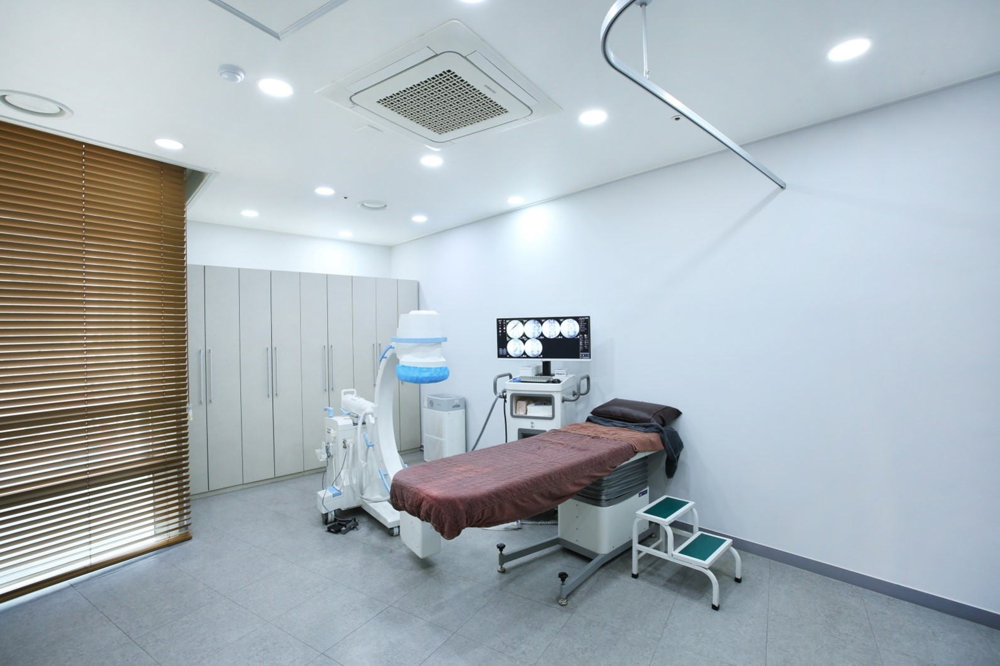
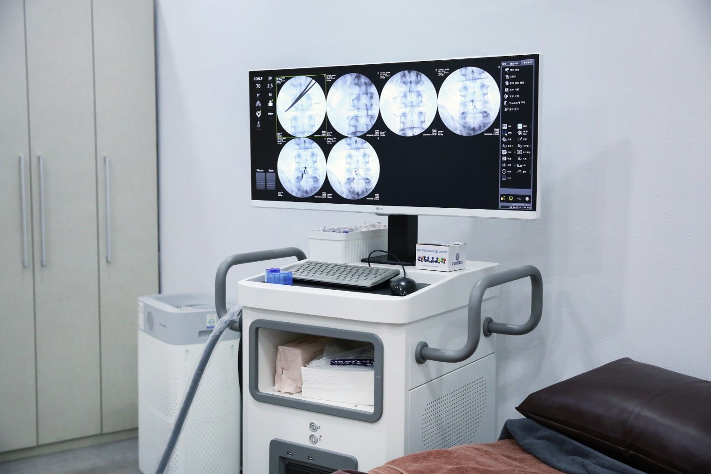
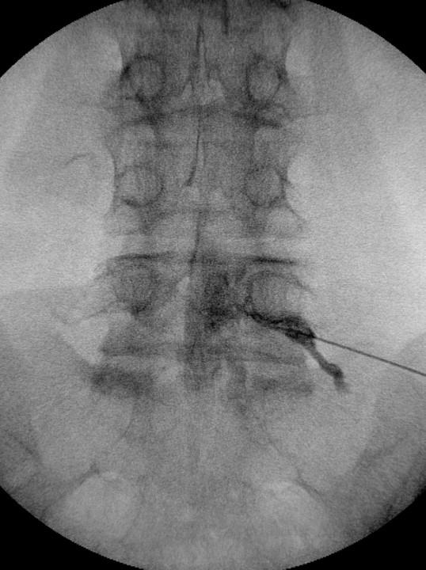
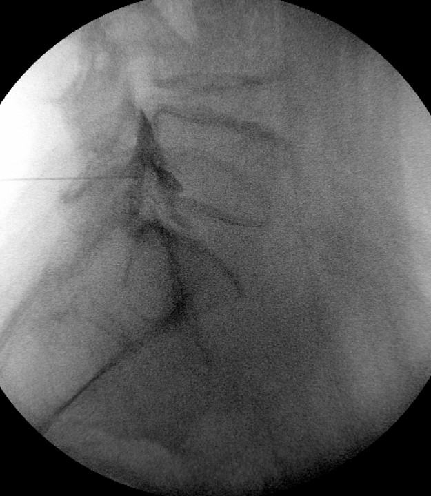
카테터로 신경 주변 유착을 풀고 약물을 주입해 통증과 연관통을 줄이는 비수술 치료입니다.
통증의 원인이 되는 병변 부위인 경막외강에 카테터로 불리는 특수한 관을 이용하여, 약물의 전달을 방해하는 섬유성 유착 등의 신경압박을 해소하고 약물을 주입하여 신경염증을 제거함으로써 통증 및 연관통을 줄이는 비수술 치료법입니다.
특수 PEN 카테터를 사용합니다. 이 카테터는 서울대병원에서도 사용하는 장비로, 좁은 협착증에도 접근이 가능하며 시술 효과가 매우 뛰어납니다.
C-arm 특수영상장치를 이용하여 척추의 상태와 병변을 확인합니다. 국소마취 후 병변 부위까지 카테터를 도달시켜 유착된 부분을 박리하고, 디스크 및 협착증 신경 사이의 염증을 효과적으로 제거합니다.
디스크 및 협착증은 잘못된 자세나 습관 등이 누적되어 발생하는 경우가 많습니다. 도수재활운동치료로 생리 해부 및 생체 역학적 측면의 전문 지식을 가진 물리치료사가 체계적인 운동관리를 통해 증상의 재발을 방지하며, 의사의 진료 및 feedback을 통해 보다 체계적으로 질환을 관리하실 수 있습니다.
시술 후 디스크 및 협착증으로 인한 증상이 일부 남는다면 CI 치료가 추가로 시행될 수 있습니다. 시술로 신경협착이나 유착이 제거되면 CI 치료가 더욱 효과적으로 시행될 수 있습니다.
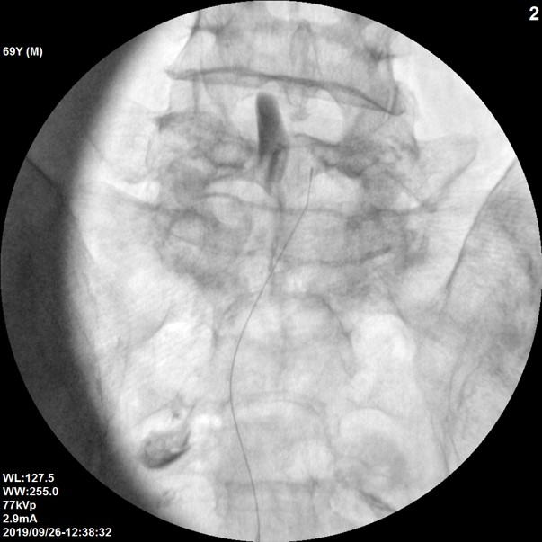
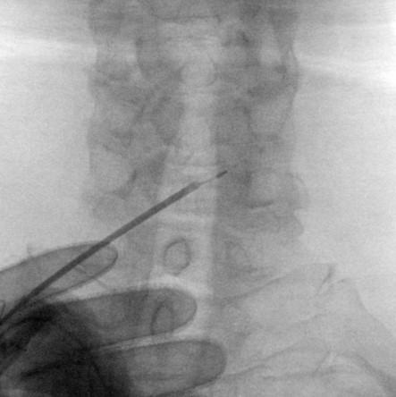
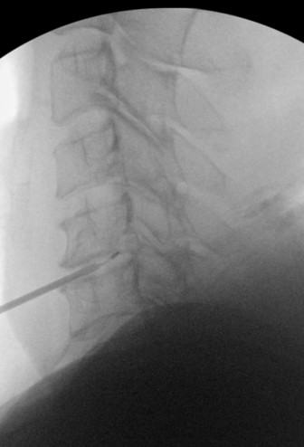
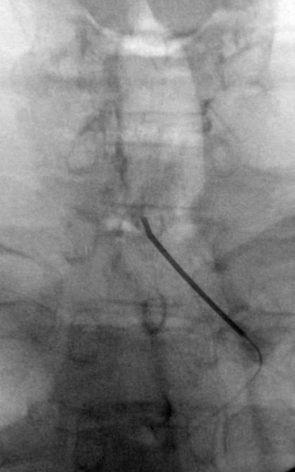
조직의 재생을 돕는 재생주사(프롤로)와, 증상·목적에 맞춘 맞춤 수액치료를 함께 제공합니다.
흔히 PDRN으로 불리는 약제로, PolyDeoxyRiboNucleotide Sodium의 약자입니다. PDRN(DNA) 약제로 통증·염증을 완화하고 조직의 재생을 유도하는 주사 치료입니다.
증상과 목적에 맞춘 맞춤 수액을 1인실에서 편안하게 받으실 수 있습니다.

초음파 에너지 파동으로 관절·인대·힘줄의 염증을 없애고 재생을 촉진하는 비수술 치료입니다.
ESWT란 Extracorporeal ShockWave Therapy의 약자로, 체외충격파라는 이름으로 불리고 있습니다.
인체에 강력한 초음파 에너지 파동을 연속적으로 전달해 질환을 치료하고 증상을 완화하는 치료법입니다.
근골격계에 사용하는 재생치료의 일종으로, 만성 염증이나 손상이 있는 관절·인대·힘줄에 집중된 초음파 에너지를 가해 염증을 없애고 안정화시키는 근본적인 비수술적 치료법입니다.
주로 근육보다 혈류 및 회복속도가 7배 느린 관절 및 인대는 반복 사용이 누적되어 손상이 발생하거나, 급성 손상 후 회복주기가 느려지기 쉽습니다. 이에 체외충격파 에너지를 이용하여 재생을 촉진시킵니다.
주 2~3회에 걸쳐 4~6회 시행하며, 1회 시술 시간은 15분 이내입니다. 치료 후 곧바로 일상생활에 복귀하실 수 있습니다.
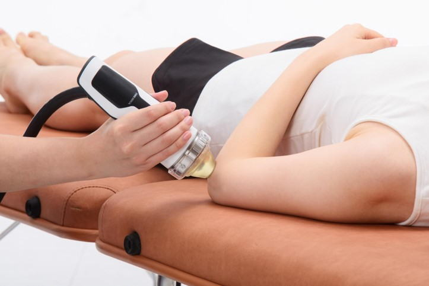
숙련된 손기술로 되찾는 몸의 균형 — 전문 치료사가 진행하는 1:1 맞춤 도수치료입니다.
도수치료는 전문 치료사가 직접 근육, 관절, 신경계 기능을 평가하고 교정하는 1:1 맞춤형 치료입니다. 움직임을 회복하고 통증을 줄이며, 체형 및 기능을 개선하는 데 중점을 둡니다. 기계가 아닌 숙련된 손기술로 진행되어 더욱 세밀하고 개별화된 접근이 가능합니다.